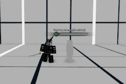
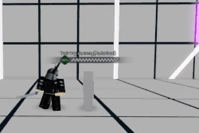

Kurai Yagami, or simply Kurai, is a Rushdown class aligned with the Purity faction. Wielding Akatsumagi, a katana enchanted with ice magic, Kurai excels at closing the gap in battle. His playstyle revolves around using the obtuse length of his sword and swift bursts of movement speed to nimbly engage the enemy. Although Kurai suffers from high endlag, his unparalleled air control and frightening speed can make him a lethal class if used right. After all, a sword is only as strong as the man (or woman) who wields it.
A deserter who abandoned the Lunar Order in favor of fighting the good fight. Kurai Yagami began his service to Purity as a trainee for the Lunar Guardians, an elite squadron of lunar spellswords dedicated to protecting the moon. Kurai was also groomed to be the next wielder of Akatsumagi. However, during his training, Kurai caught wind of the chaos sown by the terrorists known as the Phantoms. His zealous heart yearned to bring them to justice, but Vaningard was reluctant to step in due to their status as an isolated nation. Thus, Kurai renounced his rank as a trainee and ventured off to deal with Phantom himself. Later, during an encounter with some corrupted wolves, he was assisted by a traveller: Virtue. After realizing they had a common enemy, the two joined forces to ultimately put a stop to Phantom's plans.
Kurai can accumulate 3 "Stocks", displayed by 3 swords behind the user's back. Stocks are filled by successfully landing:
Depending on his amount of Stocks, Kurai's SP4, SP6, and SP8 will become increasingly effective. Kurai will consume all Stocks upon using one of these Specials.
(Ground/Air) - Kurai winds up and slam with his sheath, Raisugen, smashing the opponent into the ground. Inflicts knockdown. Has Lv. 1 Armor Break.
(Ground/Air) - Kurai quickly ascends with a rising slash and takes his opponent with him. Can be used more than once in a combo. Utilizes a soft magnet.
4 inputs, 222 damage, A Scaling
3 inputs, 191 damage, B Scaling
